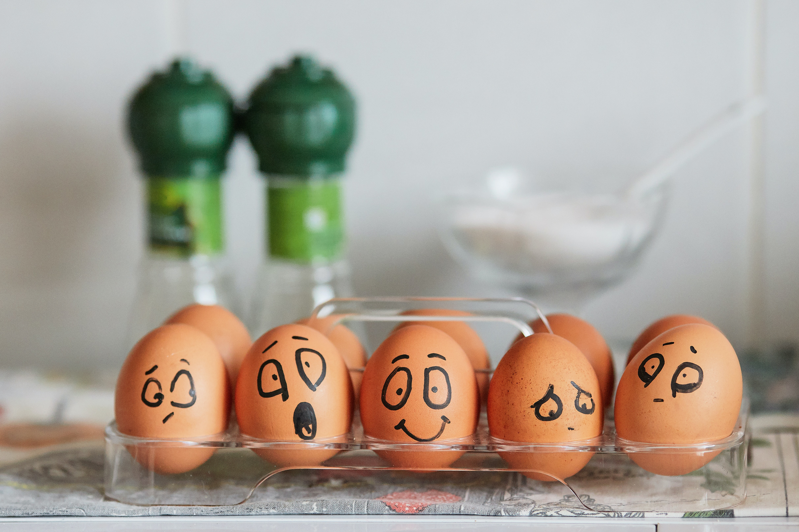
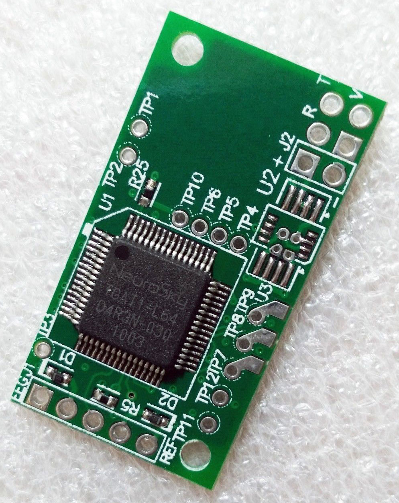
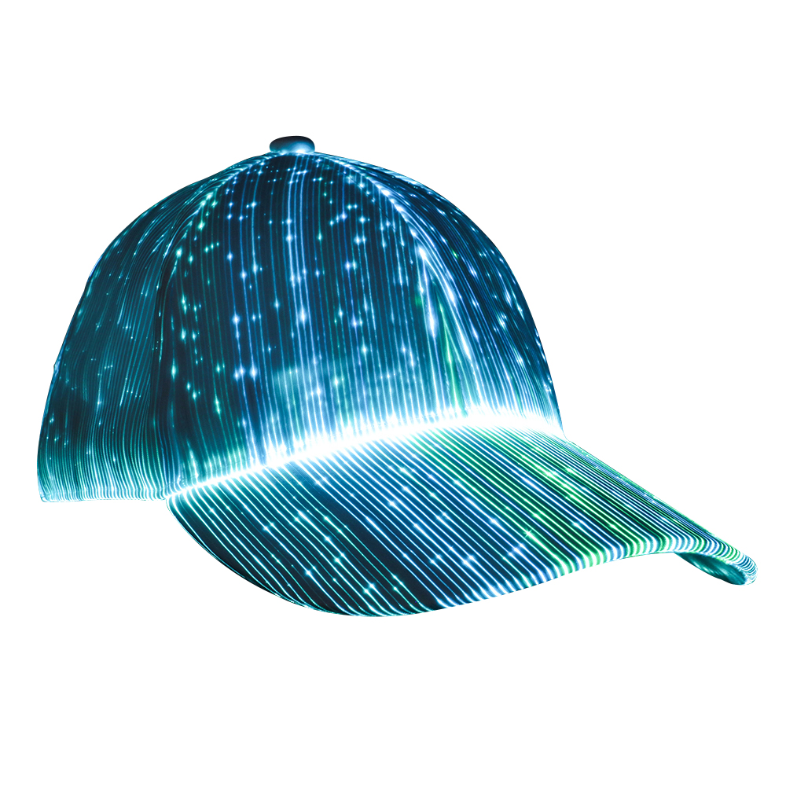
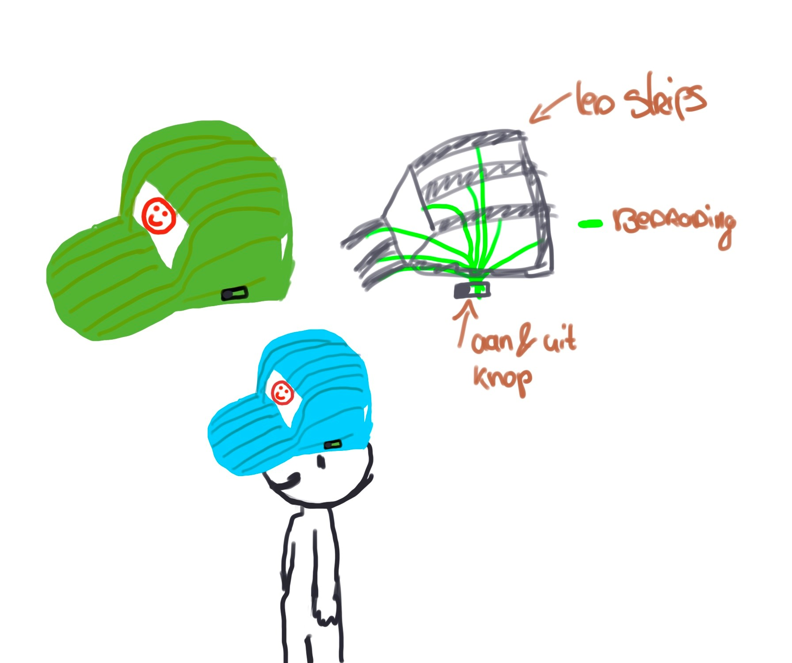

Portfolio HCI Marissa Hoekmeijer
Wearables assignment
Voor deze week zijn we aan de slag gegaan met de topic wearables. Wearables zijn eigenlijk kleine technische apparaten die je kan dragen als mens en dus met ons als mens interacteren. Voorbeelden hiervan zijn smartwatches, headsets of betaal ringen. Hele coole interactieve apparaten dus, waar ook hier weer veel toekomst in te vinden is!
Nieuwe Wearables concept
Voor deze week is het ons weer gevraagd om een concept te bedenken met betrekking op de topic. Hierbij zijn ons 2 cases gegeven, waaruit we mochten kiezen.
- Herinterpreteer je telefoon zonder een interface
- Geef je gevoelens weer door gebruik te maken van hersengolven.
Ik heb gekozen voor dat laatste en heb hiervoor het volgende concept bedacht:
Uitleg concept - Je staat van emotie tonen
Mijn concept houd in, door het dragen van een pet die op verschillende punten van je hoofd je hersengolven meet, zal de kleur van de pet kunnen veranderen naar de staat in hoe jij je voelt. Met een extra gegeven display op de voorkant van de pet, wordt hier nog een extra emotie aan toegevoegd. Dit geeft uiteindelijk aan de andere mensen om deze persoon heen door, hoe hij zich voelt en of deze persoon zin heeft in een praatje of niet. Ook kan het aangeven waarom een persoon op een bepaalde manier reageert.
Hoe werkt de interactie?
Het is eigenlijk vrij simpel. De persoon zet de pet op en door een knop aan de zijkant van de pet kan de persoon deze aanzetten. Doordat de pet aanstaat gaat hij gelijk de juiste kleur vertonen die de staat van de persoon zijn humeur aangeeft. Deze kleuren zijn bepaald op basis van onderzoek op het internet. Voor extra visualisatie worden er emoties vertoont op het display aan de voorkant van deze pet. Uiteindelijk kunnen mensen dan zelf bepalen om deze persoon aan te spreken als ze bijvoorbeeld zien dat hij niet zo blij is, eventueel kunnen ze hem wat positiviteit meegeven. Ook kunnen ze juist de keus maken om niet te communiceren met deze persoon, omdat hij bijvoorbeeld boos of niet in een goed humor is. Het doel hiervan is vooral de buitenwereld laten zien hoe je je voelt, waarna je humeur omgeslagen kan worden door eventuele buitenstaanders. Of juist met rust gelaten kan worden wanneer je echt nergens zin in hebt.
Welke sensoren worden hierbij gebruikt?
Er wordt een zogezegd gebruik gemaakt van de EEG biosensor. Dit is een sensor die je brein activiteiten op verschillende punten van je hoofd meet, meestal is dit de voorkant, zijkant en achterkant. Niet te verwarren is dat het dus niet je gedachtes meet, maar signalen die je brein afgeeft. Deze input wordt uiteindelijk via software omgezet in een bepaalde kleur code, dat doorgestuurd wordt naar de led-strip in de pet en het display. De led-strip ontvangt gelijk de juiste code binnen en vertoont hierdoor een bepaalde kleur. Het display krijgt een bepaalde code binnen en lees dit uit, deze code staat al voor de juiste emotie, waardoor het display dit gelijk kan vertonen.
Welke actuatoren zijn er gebruikt en wat voor reactie geeft het de gebruiker?
Eigenlijk is de EEG biosensor de motor van het apparaat. Doordat er elektrodes in het apparaat zijn gemaakt die de brein activiteit oppikken, wordt dit doorgestuurd naar deze specifieke sensor. Hierdoor wordt het omgezet in informatie dat door wordt gestuurd naar de pet. Doordat de pet gelijk begint op te lichten, weet de gebruiker dat het apparaatje werkt.
Hoe ziet dit eruit?
De pet die de breinactiviteiten meet maar ook gelijk de interactie laat zien, is gemaakt van katoen. In de binnen werking van dit katoen zitten led-strippen verwerkt die aan gaan waarna het de juiste informatie ontvangt. Aan de voorkant is een display gemonteerd wat niet in de binnen voering, maar aan de buitenkant van de pet zit. Wel zijn de led-strips en het display met elkaar in bedrading verbonden met de EEG sensor. Aan de zijkant is nog een aan en uit knop te vinden die ook verbonden is met deze sensor.
 